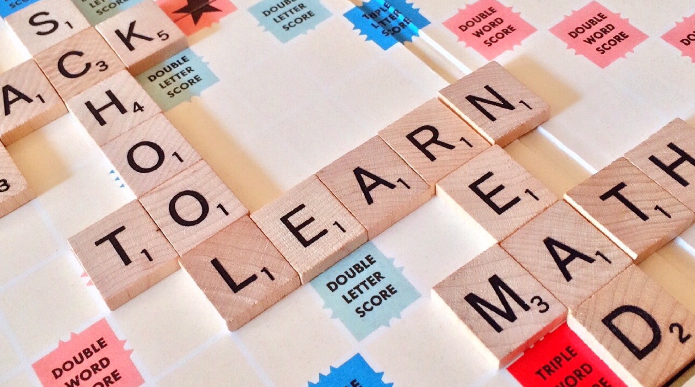
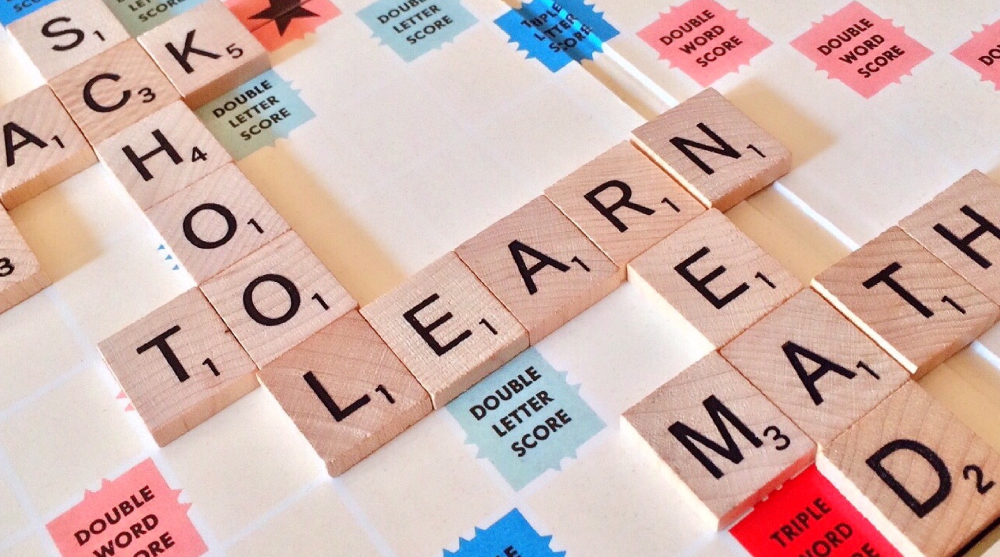

A mind sport is a type of competition based on how well you think about strategy and how to win. It does not require a lot of physical activity or body movement. As a result, it requires more mental than physical skills to do well.
These games don’t necessitate a large open area to play. They can be done at a house or in a specialized indoor location that has been built up for that purpose. It is common for most table-top games to be played indoors. Some outdoor activities were originally designed to be played indoors as well. Indoor soccer and Indoor cricket are two examples of this type of activity.


A ball sport is a game that involves the usage of a ball. Among these are ball-over-net, bat-and-ball, and stick-and-ball games.


As the principal piece of equipment, these sports use a certain sort of board. Skateboarding and Surfing are examples of this genre.

Fighting sports are another term for combat sports. It’s a competitive combat sport involving one-on-one combat. It covers all martial arts and historic fighting events, whether using raw force or a specific weapon.


Systematic exercises that need and demonstrate balance, flexibility, coordination, strength, and overall physical training are at the heart of gymnastics. It is common to use rings, beams, and bars as part of the fabrication process.


When we say “ice sports,” we refer to competitions on an ice surface. Winter sports competitions are the most common time for these events.